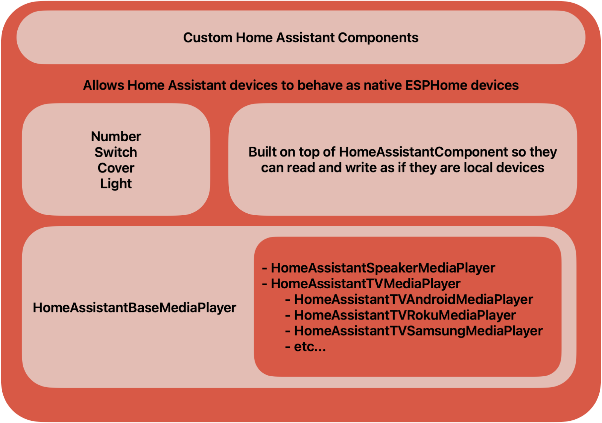
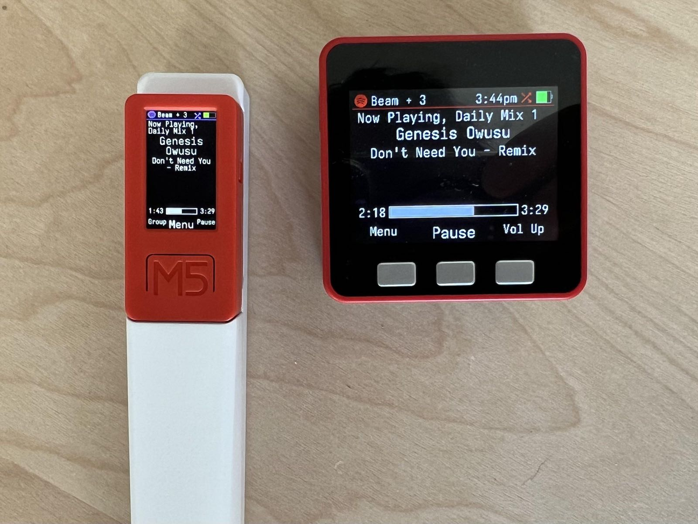
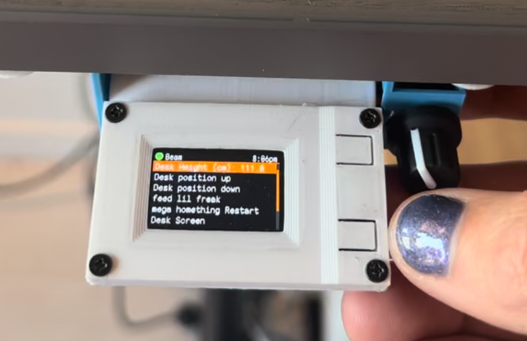

What we learned in the first year making homeThing

Menu


The custom menu system is drawn using rectangles, lines, icons and text. The menu works on any screen over 60x60 and in any orientation. The fonts, colors and margins are all customizable for different scenarios. There is also a custom menu for the Now Playing screen which replicates the original iPod’s now playing screen.
The menu was originally designed around different types of devices (speakers, lights, switches, etc). It was a major improvement to make the screens generic so the device types can be mixed. Now we can have screens for different rooms, or for settings on the device.
When I started to work on the menu system, there wasn’t any progress on an official ESPHome menu system. Since then the Display Menu component has been merged. It currently works with grayscale LCD displays, the Graphical Display Menu is still in review for color screens.
homeThing Component https://github.com/landonr/homeThing
Graphical Display Component https://github.com/esphome/esphome/pull/4105
Making The Project Easier to Work With
After posting about the project on Reddit I got a few people interested in helping out. One person reached out to create the Light Detail menu which lets users change the brightness, temperature and color on lights. At this point the project changed from an independent project, to a collaboration. So the first thing I did was set up a Discord channel to make it easier for us to communicate.
We also started to struggle with formatting, setup and bug reporting. I got the GitHub project set up with code format checking on pull requests using CPPLint to clean up the project and align our code. I also added a build script that compiles all of the example devices to make sure the code can be merged safely. The build script also runs daily to let me know if the project needs updating due to a breaking change in ESPHome.
Originally I had my personal devices included in the GitHub repository. I changed it so the repository only has example configs for tested devices, so it’s easy for people to copy and paste when setting up a new device. My personal devices are now moved to a new repo with a daily Github action to make sure they are always working.
Personal ESPHome Devices https://github.com/landonr/esphome-devices/
Smart Home Integration
The challenges showed up when I started to communicate with media players. Home Assistant lets us use one API for many different kinds of smart home devices (media players, lights, etc), but they don’t all work the same. I began with getting Sonos to work, and then moved onto my Roku TV next. This process let me get an idea on how to structure the code.

ESPHome provides a component for reading the state of lights and switches, but I needed to control them so I made my own base component for controllable Home Assistant devices. After that I made Media Player (Speaker, TV, Soundbar), Light, Switch, etc components on top of that. Finally there are specific integrations for devices that need custom code like Sonos and Samsung TVs are built on top of the base devices.
Example Configuration for controlling a switch, light, speaker and tv
switch:
- platform: homeassistant_component
entity_id: "switch.oven_fan"
name: "Oven Fan"
id: oven_fan_switch
# sonos favorite source
media_player_source_sonos:
id: sonos
media_player:
- platform: homeassistant_media_player
name: Beam
entity_id: "media_player.beam"
id: media_player_beam
type: speaker
sources:
- id: sonos
type: sonos
- platform: homeassistant_media_player
name: TV
entity_id: "media_player.55_tcl_roku_tv"
id: media_player_tv
type: roku
This approach makes it easy for users to add new media player types. Users can make a new class based on the base media player, and then fill out the corresponding service calls (Play, Pause, Navigation, etc). The remote checks the device’s features and only shows commands that it supports like grouping.
ESPHome External Components
Once enough people started to use the project, I began to run into setup issues. The project needed people to download code and copy it onto their servers. It also couldn’t be updated easily. ESPHome provides External Components which is the suggested method for creating integrations - so I jumped into learning that. This took longer than expected because I couldn’t find much documentation on it. So after making some friends on Discord and GitHub I got comfortable enough to make my own tutorial.

ESPHome Components From Scratch
I got some feedback that copying images and fonts into the ESPHome build folder makes the set up process a lot more intimidating. I was able to improve this step by getting ESPHome to load images and fonts from the web on build. Users can now paste in a few lines in their config to load what ever images they want to display.
Online Font and Image examples
font:
- file: "https://github.com/landonr/homeThing/raw/main/fonts/iosevka.ttf"
id: web_font
size: 20
image:
id: launch_image
file: "https://freight.cargo.site/t/original/i/35740c5dcf360e685ed3f8a27095b923c658ea3435692ecfa6b2036725a90776/desklogo.png"
resize: 168x60
type: TRANSPARENT_BINARY
Homething Components https://github.com/landonr/homeThing/tree/main/components
Online Font https://github.com/esphome/esphome/pull/5254
Online Images https://github.com/esphome/esphome/pull/5214
Supporting Other Hardware



TDisplay S3
A newer generation of the display/cpu that we use came out later in 2022. I got one but there were issues getting it working with ESPHome. The display uses a patched version of the display driver. I spent some time trying to get basic text working using an ESPHome component, and then made a GitHub repo with the code. Several people saw the repo and have contributed to it. We now have the device fully working with ESPHome!
LilyGo TDisplay S3 Component https://github.com/landonr/lilygo-tdisplays3-esphome
M5Stack
We were also interested in running homeThing on a device out of the box. This led us to the M5Stack Stick and Fire. Both of these devices have a ESP32, display, buttons and a battery. HomeThing was originally designed to be controlled using the iPod click wheel, so we had to refactor the controls to make it work for 3 button devices.
The M5StickC uses the AXP192 battery management system which needs to be controlled in order to turn the screen on. There are a few repos on GitHub for this system, but ultimately we settled on using ‘martydingos’ repo. We contributed charging detection and display brightness back into this repo for use in homeThing.
M5Stack Fire uses IP5306 for battery management which also needs the same treatment. Another GitHub user, ssieb helped us make a IP5306 component to get the M5Stack Fire working.
Both of these devices have internal microphones which make them ideal for Voice Assistant. We have tested and confirmed the M5Stick C works, however there are stability issues with the M5Stack Fire using assist.
M5Stack AXP192 Component https://github.com/martydingo/esphome-axp192
M5Stack Unit Encoder C Component https://github.com/landonr/esphome-components/tree/main/components/UnitEncoderC
M5Stack Mini Encoder Component https://github.com/landonr/esphome-components/tree/main/components/MiniEncoderC
M5Stack IP5306 Component https://github.com/ssieb/custom_components/tree/master/components/ip5306
- lando